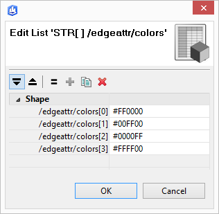
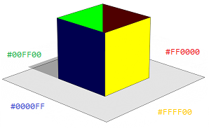
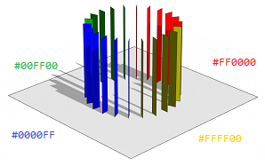
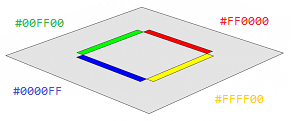

edgeAttr functions
Syntax
float edgeAttr.getFloat(attributeName)
string edgeAttr.getString(attributeName)
bool edgeAttr.getBool(attributeName)
Parameters
- attributeName (string)
Name of edge attribute array: /edgeattr/attributeName
Returns
One sampled element of the edge attribute array. If no attribute /edgeattr/attributeName exists or if the requested type does not match a default value is returned (0, "", false respectively).
Description
The edgeAttr functions return the element of an edge attribute array that best corresponds to the current shape geometry.
Edge attributes
Edge attributes allow to store information on face edges of an initial shape. They are specified as arrays in face-order. The first element sets an attribute for the first edge of the first face, the second element sets an attribute for the second edge of the first face, and so on. Shared edges are considered separately on following encounters. Edge attribute arrays start with a prefix /edgeattr/ followed by an attributeName. In CityEngine these arrays are set as object attributes on an initial shape.
Sampling via edgeAttr functions
Edge attributes can be sampled in CGA. The current shape geometry is projected on the outline of the initial shape. The edge attribute with the highest projected coverage is returned as the result of a edgeAttr function. The projection only works in 2D wrt. the average plane of the initial shape. The projection direction follows the general orientation of current shape geometry (average normal).
Related
Examples
Edge attribute array
 |
A rectangular shape has a string array with colors set as edge attributes. |
Sampling on faces
|  |
getColor = edgeAttr.getString("colors")
Lot --> primitiveCube(10, 10, 10)
comp(f) { side : color(getColor) Face. }
The side faces of a cube are projected along their normals onto the face edges of the initial shape.
|
Sampling on edges
|  |
Edge --> s('1,0,1)
primitiveQuad
Lot --> primitiveCylinder(22, 5, 10)
comp(e) { vertical : color(getColor) Edge }
The vertical edges of a cylinder are projected along their normals onto the face edges of the initial shape. Note that also edges (e) have a normal set that points along the average of the neighboring face normals. After a component split the normal coincides with the z-axis of the component scopes.
|
Sampling on face edges
|  |
Lot --> primitiveQuad(10, 10)
comp(fe) { all : color(getColor) Edge }
All face edges of a quad are projected along their normals onto the face edges of the initial shape. Note that also face edges (fe) have a normal set that points out of the face orthogonally to the edge and the face normal. After a component split the normal coincides with the z-axis of the component scopes.
|
See for example the setbackPerEdge operation for applications.
Copyright ©2008-2022 Esri R&D Center Zurich. All rights reserved.